| 陆军科技 | 海军科技 | 空军科技 | 电子与工业 |
|---|---|---|---|
|
「无」 |
「无」 没有
|
|
| 陆军学说 | 海军学说 | 空军学说 |
|---|---|---|
|
「无」 |
「无」 |
「无」 |
原页面：Iraq
 伊拉克 is medium-sized country in West Asia with a population of 3.91 M. It is bordered by
伊拉克 is medium-sized country in West Asia with a population of 3.91 M. It is bordered by  土耳其 to the north,
土耳其 to the north,  叙利亚和
叙利亚和 约旦 to the west,
约旦 to the west,  沙特阿拉伯和
沙特阿拉伯和 科威特 to the south and
科威特 to the south and  伊朗 to the east.
伊朗 to the east.
Before the First World War,  伊拉克 was part of the Ottoman Empire. The Ottomans were defeated and driven from much of the area by the
伊拉克 was part of the Ottoman Empire. The Ottomans were defeated and driven from much of the area by the  英国 during the dissolution of the Ottoman Empire. On 11 November 1920, Iraq became a League of Nations mandate under British control with the name "State of Iraq". The British installed the Hashemite king, Faisal I to govern the mandate. Britain would then grant independence to the Kingdom of Iraq in 1932, on the urging of King Faisal. King Ghazi ruled as a figurehead after King Faisal's death in 1933, while undermined by attempted military coups, until his death in 1939. Ghazi was followed by his underage son, Faisal II. 'Abd al-Ilah served as Regent during Faisal's minority.
英国 during the dissolution of the Ottoman Empire. On 11 November 1920, Iraq became a League of Nations mandate under British control with the name "State of Iraq". The British installed the Hashemite king, Faisal I to govern the mandate. Britain would then grant independence to the Kingdom of Iraq in 1932, on the urging of King Faisal. King Ghazi ruled as a figurehead after King Faisal's death in 1933, while undermined by attempted military coups, until his death in 1939. Ghazi was followed by his underage son, Faisal II. 'Abd al-Ilah served as Regent during Faisal's minority.
On 1 April 1941, Rashid Ali al-Gaylani and members of the Golden Square staged a coup d'état and overthrew the government of 'Abd al-Ilah. During the subsequent Anglo-Iraqi War, the United Kingdom invaded Iraq for fear that the Rashid Ali government might cut oil supplies to Western nations because of his links to the Axis powers. The war started on the 2nd of May, and the British, defeated the forces of Al-Gaylani, forcing an armistice on the 31st of May.
A military occupation followed the restoration of the pre-coup government of the Hashemite monarchy. The occupation ended on 26 October 1947, although Britain was to retain military bases in Iraq until 1954. The rulers during the occupation and the remainder of the Hashemite monarchy were Nuri as-Said, the autocratic Prime Minister, who also ruled from 1930–1932, and 'Abd al-Ilah, the former Regent who now served as an adviser to King Faisal II.
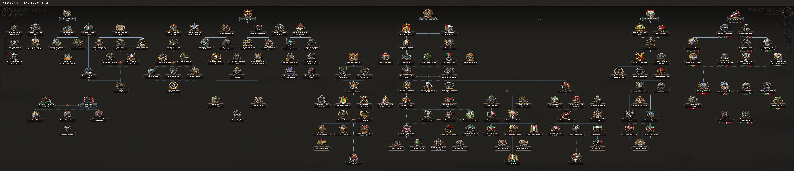
 伊拉克 gets a unique national focus tree as part of the
伊拉克 gets a unique national focus tree as part of the  帝国坟场 expansion. Without the expansion, Iraq utilizes the 通用国策树.
帝国坟场 expansion. Without the expansion, Iraq utilizes the 通用国策树.
The Iraqi national focus tree can be divided into 5 branches and 6 sub-branches and 1 joint branch:
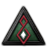
Royal Iraqi Airforce and builds up the country's capabilities fighting in the air.
When the DLC  帝国坟场 is enabled,
帝国坟场 is enabled,  伊拉克 starts with the following national spirits:
伊拉克 starts with the following national spirits:
 伊拉克开局拥有 2 个可用科研槽；另有 3 个可通过国策树解锁。
伊拉克开局拥有 2 个可用科研槽；另有 3 个可通过国策树解锁。
| 陆军科技 | 海军科技 | 空军科技 | 电子与工业 |
|---|---|---|---|
|
「无」 |
「无」 没有
|
|
| 陆军学说 | 海军学说 | 空军学说 |
|---|---|---|
|
「无」 |
「无」 |
「无」 |
| 陆军科技 | 海军科技 | 空军科技 | 电子与工业 |
|---|---|---|---|
|
「无」 |
「无」 没有
|
|
| 陆军学说 | 海军学说 | 空军学说 |
|---|---|---|
|
|
|
 伊拉克 has a number of unique names for various technologies and equipment, listed here. Particularly British armaments. Note that generic names are not listed.
伊拉克 has a number of unique names for various technologies and equipment, listed here. Particularly British armaments. Note that generic names are not listed.
| 类型 | 1918 | 1936 | 1938 | 1939 | 1940 | 1942 | 1943 | 1944 |
|---|---|---|---|---|---|---|---|---|
| 支援武器 | Vickers MG & Stokes mortar | Lewis Mk. III DEMS & SBML two-inch mortar | Bren Mk. I & ML 3 inch mortar | Bren Mk. III & ML 4.2 inch Mortar | ||||
| 步兵装备 | Rifle No.1 MkIII | Rifle No.4 MkI | Sten MkII | Sterling MkI | ||||
| 步兵反坦克 | Boys Anti-Tank Rifle | PIAT | ||||||
| 机械化 | Bren Carrier | Universal Carrier | Churchill Kangaroo | |||||
| 装甲车 |
Humber | AEC | NA |
 伊拉克拥有 5 个州。
伊拉克拥有 5 个州。
| 州 | 城市 | 地形（省份数） | 区域 | ||
|---|---|---|---|---|---|
| 安巴尔 | Rumadiyah Trebil |
1 0 |
乡村区 | 479,801 | |
| 巴士拉 | Al Diwaniyah Amarah Basrah Kut Najaf Nasiriyah |
0 0 5 0 3 1 |
发达乡村区 | 980,164 | |
| 哈杰拉 | Samawah | 1 | 荒地 | 222,093 | |
| 巴格达 | 巴格达 Fallujah Karbala Ramadi Tikrit |
10 0 1 0 2 |
发达乡村区 | 1,044,165 | |
| 摩苏尔 | Duhok Erbil Kirkuk 摩苏尔 Sulaymaniyah |
0 3 0 5 1 |
发达乡村区 | 1,182,741 |
 伊拉克 以
伊拉克 以 中立主义开局，不举行选举。
中立主义开局，不举行选举。
 伊拉克 的起始政党。
伊拉克 的起始政党。
| 同上 | 政党名称 | 支持率 | 领袖 | Ruling |
|---|---|---|---|---|
| Jamyat al-Ahd (Al-'Ahd) | 0% | 努里·赛义德 | ||
| Al-Hizb ash-Shiyu'i al-'Iraqi (ICP) | 0% | 优素福·萨勒曼·优素福 | ||
| Hizb al-Ikha al-Watani (HIW) | 20% | 拉希德·阿里·盖拉尼 | ||
| Hashemite Dynasty (al-Hāshimiyyūn) | 80% | 加齐一世 |
||
| Hashemite Dynasty (al-Hāshimiyyūn) | 80% | 亚辛·哈希米 |
| 同上 | 政党名称 | 支持率 | 领袖 | Ruling |
|---|---|---|---|---|
| Jamyat al-Ahd (Al-'Ahd) | 0% | 努里·赛义德 | ||
| Al-Hizb ash-Shiyu'i al-'Iraqi (ICP) | 0% | 优素福·萨勒曼·优素福 | ||
| Hizb al-Ikha al-Watani (HIW) | 30% | 拉希德·阿里·盖拉尼 | ||
| Hashemite Dynasty (al-Hāshimiyyūn) | 70% | Faisal II |
||
| Hashemite Dynasty (al-Hāshimiyyūn) | 70% | 努里·赛义德 |
伊拉克 的可能国家领袖。
的可能国家领袖。
| 意识形态 | 肖像 | 名称 | 党派 | 特质 | 效果 | 可用 |
|---|---|---|---|---|---|---|
Despotism |
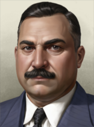 |
亚辛·哈希米 | 哈希姆王朝 | 阿拉伯人的俾斯麦 |
|
起始领袖 |
Despotism |
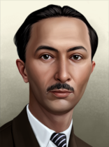 |
阿卜杜勒-伊拉赫 | 哈希姆王朝 | 哈希姆摄政 |
|
通过事件对哈希姆绝对统治的支持激增 |
Despotism |
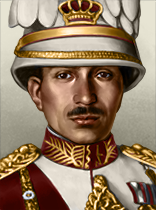 |
加齐一世 | 哈希姆王朝 | – | – | Starting leader 1936 (No GOE dlc) |
Despotism |

|
Faisal II | 哈希姆王朝 | – | – | Starting leader 1939 (No GOE dlc) |
Despotism |
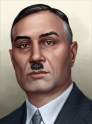 |
希克马特·苏莱曼 | 哈希姆王朝 | 反英社会改革者 | Via focus 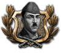 贝克尔·西德基的政变 | |
Despotism |
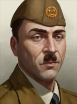 |
贝克尔·西德基 | 哈希姆王朝 | Dictator |
|
Via focus 抑制泛阿拉伯主义 |
Despotism |
谢赫艾哈迈德·巴尔扎尼 | Eşîra Barzanî (Barzan) | Counter Insurgency Expert |
|
Via focus | |
Despotism |
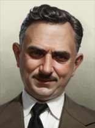 |
努里·赛义德 | 哈希姆王朝 | 英国走狗 | Via focus 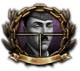 贝克尔·西德基遇刺 | |
保守主义 |
努里·赛义德 | 契约社团 | Pro-Western Iraqi Nationalist |
|
Via the | |
保守主义 |
谢赫艾哈迈德·巴尔扎尼 | 库尔德斯坦民主党 | Counter Insurgency Expert |
|
Via focus | |
法西斯主义 |
拉希德·阿里·盖拉尼 | Hizb al-Ikha al-Watani (HIW) | Arab-Fascist Adherent |
|
Via focus 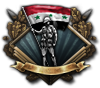 巩固金方阵 | |
列宁主义 |
优素福·萨勒曼·优素福 | Al-Hizb ash-Shiyu'i al-'Iraqi (ICP) | 法赫德同志 |
|
起始共产主义领袖 | |
斯大林主义 |
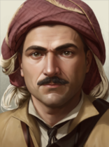 |
穆斯塔法·巴尔扎尼 | Hizbî Şiyuî Kurdistan (HSK) | Counter Insurgency Expert |
|
Via focus |
伊拉克 的可能国名。
的可能国名。
| 同上 | 国家名称 |
|---|---|
| Iraqi Republic | |
| Iraqi People's State | |
| Al-Muthanna Iraq | |
| 伊拉克王国 |
The  苏联 may gain a war goal against Iraq via their Southern Thrust national focus. Likewise the UK through its Securing Iraq. It may form
苏联 may gain a war goal against Iraq via their Southern Thrust national focus. Likewise the UK through its Securing Iraq. It may form  Arabia if it controls
Arabia if it controls  沙特阿拉伯,
沙特阿拉伯,  阿曼, and
阿曼, and  也门.
也门.
伊拉克 的部长与军事幕僚
的部长与军事幕僚
| 名称 | 特质 | 效果 | 花费（） |
|---|---|---|---|
| 加齐一世 |
King of Iraq | 150 | |
| Faisal II |
幼主 |
|
150 |
| 阿卜杜勒-伊拉赫 |
哈希姆摄政 |
|
150 |
| 希克马特·苏莱曼 |
Minister of the Interior |
|
150 |
| 优素福·萨勒曼·优素福 |
共产主义暴动者 |
|
150 |
| Tawfiq al-Suwaidi |
Westernized Foreign Minister | 150 | |
| 努里·赛义德 |
军备组织者 | 150 | |
| Hamdi al Pachachi |
Nationalist Lawyer | 150 | |
| Taha al-Hashimi |
Minister of Defense | 150 | |
| Muhammad Husayn Kashif al-Ghita |
Shiite Philosopher |
|
150 |
| 阿明·侯赛尼 |
The Grand Mufti | 150 | |
| Muhammad Amin Zaki |
Kurdish Politician |
|
150 |
| Ali Mahmud al Shaykh |
Minister of Justice |
|
150 |
| Ali Abn Hussein |
幕后暗算者 |
|
150 |
| Jamil al Midfai |
Militant Politician | 150 | |
| Sharaf bin Rajeh |
Emir of Taif |
|
150 |
| Sharaf bin Rajeh |
幕后暗算者 |
|
150 |
| Husain al-Rahhal |
As-Sahifah Editor |
|
150 |
| Ma'ruf al-Rusafi |
Poet of Freedom | 150 | |
| Salah al-Din al-Sabbagh |
Knight of Arabism | 150 | |
| Jamil Abdul Wahab |
Minister of Education |
|
150 |
| Max von Oppenheim |
German Pan-Arabist |
|
150 |
| Saib Shawkat |
Al-Muthanna Leader | 150 | |
| Ibrahim Kamal Al-Ghadanfari |
金融专家 |
|
150 |
| Calouste Sarkis Gulbenkian |
Armenian Oil Magnate |
|
150 |
| Fritz Grobba |
German Ambassador | 150 | |
| Kamil Chadirj |
Staunch Socialist | 150 | |
| Mohammed Hadid |
社会主义经济学家 |
|
150 |
| Ja'far Abu al-Timman |
The Guardian of Independence |
|
150 |
| Muhammad Mahdi Kubba | Shiite Representative |
|
150 |
| Naji al-Suwaidi |
Great Iraqi Statesman |
|
150 |
| Amir al-Illah |
恐怖亲王 |
|
150 |
| 贝克尔·西德基 |
王座背后的权力 |
|
150 |
| 名称 | 特质 | 效果 | 花费（） |
|---|---|---|---|
| Iskandar al-Shami |
海军理论家 |
|
100 |
| Mustafa al-Qudsi |
军事理论家 |
|
100 |
| Ali ben Jawad |
空战理论家 |
|
100 |
| 马哈茂德·萨尔曼 |
空战理论家 |
|
100 |
| 穆罕默德·阿里·贾瓦德 |
突击航空 |
|
100 |
| 贝克尔·西德基 |
军事理论家 |
|
100 |
| 名称 | 特质 | 效果 | 花费（） |
|---|---|---|---|
| Abdullah |
陆军防御（专家） |
|
100 |
| Fawzi al-Qawuqji |
陆军进攻（专家） |
|
100 |
| Hussein Fawzi |
陆军组织（专家） |
|
100 |
| 名称 | 特质 | 效果 | 花费（） |
|---|---|---|---|
| Hamdi al Pachachi |
决战（专家） |
|
100 |
| Jamil al Midfai |
海军改革者（专家） | 100 | |
| Ahmed Rushdi bin al-Hajj Muhammad |
海军改革者（专家） | 100 |
| 名称 | 特质 | 效果 | 花费（） |
|---|---|---|---|
| 马哈茂德·萨尔曼 |
地面支援（专家） |
|
100 |
| Abdullah al-Tell |
空军改革者（专家） | 100 | |
| Amir al-Illah |
全天候（专家） |
|
100 |
| Jamil Ahmad Abdullah Al-Rawi | 空军改革者（专家） | 100 | |
| Khaled al Dalabeeh |
地面支援（专家） |
|
100 |
| 名称 | 特质 | 效果 | 花费（） |
|---|---|---|---|
| Taha al-Hashimi | 陆军重整（专家） |
|
100 |
| Ali Mahmud al Shaykh |
两栖突击（专家） |
|
100 |
| Salah al-Din al-Sabbagh | 制空（专家） |
|
100 |
| Werner Junck |
Fliegerführer Irak (Expert) |
|
100 |
| Harry George Smart |
Air Vice Marshal (Expert) |
|
100 |
| Akram Mushtak |
Pilot Training (Expert) |
|
100 |
| Taha al Ahmani |
海军防空（专家） |
|
100 |
| Fahmi Sa'id |
Combined Arms (Expert) |
|
100 |
| Fahmi Sa'id |
近距离空中支援（专家） |
|
100 |
| Kamil Shabib |
步兵（专家） |
|
100 |
| 贝克尔·西德基 |
工事（专家） |
|
100 |
| 肖像 | 名称 | 特质 | 要求 | |||||
|---|---|---|---|---|---|---|---|---|
| 阿卜杜勒-伊拉赫 | 3 | 3 | 3 | 2 | 2 |
| ||
| 谢赫艾哈迈德·巴尔扎尼 | 3 | 3 | 2 | 2 | 3 |
|
| 肖像 | 名称 | 特质 | 要求 | |||||
|---|---|---|---|---|---|---|---|---|
| 穆斯塔法·巴尔扎尼 | 3 | 2 | 2 | 3 | 3 |
| ||
| 贝克尔·西德基 | 2 | 3 | 2 | 2 | 1 | |||
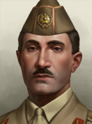 |
Fahmi Sa'id | 2 | 2 | 2 | 1 | 2 | ||
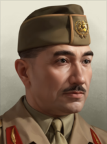 |
Hussein Fawzi | 2 | 1 | 2 | 2 | 2 | ||
| Kamil Shabib | 2 | 2 | 1 | 2 | 2 | |||
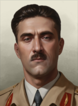 |
Salah al-Din al-Sabbagh | 2 | 2 | 1 | 2 | 2 | ||
| Taha al-Hashimi | 3 | 3 | 2 | 2 | 3 |
|
Without  帝国坟场,
帝国坟场,  伊拉克 uses generic Industrial concerns.
伊拉克 uses generic Industrial concerns.
| 标志 | 名称 | 类型 | 效果 | 要求 | 花费（） |
DLC |
|---|---|---|---|---|---|---|

|
Iraqi State Railways | 铁路公司 |
|
150 | ||

|
State Company for Iron and Steel | 工业钢厂 |
|
|
150 | |

|
Iraq Petroleum Company | Oil Extraction Company |
|
|
150 | |

|
British Overseas Airways Corporation | Civilian Airway Company |
|
|
150 | |

|
Nairn Transport Company | Desert Transport Company |
|
|
150 |
伊拉克 的设计公司。
的设计公司。
| 标志 | 名称 | 类型 | 效果 | 要求 | 花费（） |
|---|---|---|---|---|---|

|
装甲连 | 坦克设计商 |
选择此设计公司后，只要它仍在受雇，就会永久影响其受雇期间研究的所有装备的性能。 |
– | 150 |
| 标志 | 名称 | 类型 | 效果 | 要求 | 花费（） |
|---|---|---|---|---|---|

|
海军连 | 舰船设计商 |
|
– | 150 |
| 标志 | 名称 | 类型 | 效果 | 要求 | 花费（） |
|---|---|---|---|---|---|

|
轻型航空连 | 轻型飞机设计商 |
选择此设计公司后，只要它仍在受雇，就会永久影响其受雇期间研究的所有装备的性能。 |
– | 150 |

|
中型航空连 | 中型飞机设计商 |
选择此设计公司后，只要它仍在受雇，就会永久影响其受雇期间研究的所有装备的性能。 |
– | 150 |

|
重型航空连 | 重型飞机设计商 |
选择此设计公司后，只要它仍在受雇，就会永久影响其受雇期间研究的所有装备的性能。 |
– | 150 |

|
海军空军连 | 海军飞机设计商 |
选择此设计公司后，只要它仍在受雇，就会永久影响其受雇期间研究的所有装备的性能。 |
– | 150 |
| 标志 | 名称 | 类型 | 效果 | 要求 | 花费（） |
|---|---|---|---|---|---|

|
摩托化连 | 摩托化装备设计商 |
|
– | 150 |

|
轻武器公司 | 步兵装备设计商 |
|
– | 150 |

|
火炮连 | 火炮设计商 |
|
– | 150 |
 伊拉克 可使用这些军工产业组织。
伊拉克 可使用这些军工产业组织。
| ||||||||||||||||||||||||||||||||||||||||||||||||||||||||||||||||||||||||||||||||||||||||||||||||||||||||||||||||||||||||||||||||||||||||||||||||||||||||||||||||||||||||||||||||||||||||||||||||||||||||||
| ||||||||||||||||||||||||||||||||||||||||||||||||||||||||||||||||||||||||||||||||||||||||||||||||||||||||||||||||||||||||||||||||||||||||||||||||||||||||||||||||||||||||||||||||||||||||||||||||||||||||||||||||||||||||||
| ||||||||||||||||||||||||||||||||||||||||||||||||||||||||||||||||||||||||||||||||||||||||||||||||||||||||||||||||||||||||||||||||||||||||||||||||||||||||||||||||||||||||||||||||||||||||||||||||||||||||||||||||||||||||||
| ||||||||||||||||||||||||||||||||||||||||||||||||||||||||||||||||||||||||||||||||||||||||||||||||||||||||||||||||||||||||||||||||||||||||||||||||||||||||||||||||||||||||||||||||||||||||||||||||||||||||||||||||||||||||||||||||||||||||||||||||||||||||||||||||||||||||||||||||||||||||||||||||||||||||||||||||||||||||||||||||||||||||||||||||||
| 征兵法案 | 贸易法案 | 经济法令 |
|---|---|---|
|
|
|
年份 |
军用工厂 |
海军船坞 |
民用工厂 |
建筑槽位 |
|---|---|---|---|---|
| 1936 | 2 | 0 | 2 (-1) | 14 |
*红色 中的数字表示生产消费品所需的民用工厂数量，依据经济法案以及军用与民用工厂总数向上取整。
年份 |
石油 |
铝 |
橡胶 |
钨 |
钢铁 |
铬 |
煤 |
|---|---|---|---|---|---|---|---|
| 1936 | 0* | 11 (-5) | 0 | 0 | 6 (-3) | 0 | 0 |
*这些数字表示游戏开始一小时后可用的资源量。红色 中的数字表示因贸易法案而留作出口的资源量。
* With  博斯普鲁斯之战, the
博斯普鲁斯之战, the  UK gets all of
UK gets all of  伊拉克's
伊拉克's  石油.
石油.
| 类型 | # 1936 | # 1939 | |
|---|---|---|---|
| 步兵 | 2 | 3 | |
| 民兵 | 0 | 3 | |
| 山地兵 | 0 | 1 | |
| 骑兵 | 1 | 0 | |
| 师总数 | 3 | 7 | |
| 已用人力 | 16.00K | 48.90K |
| 师 | 名称列表 | # 1936 | # 1939 | 支援连 | 战斗营 |
|---|---|---|---|---|---|
| 步兵师 | 2 | 0 | 6x | ||
| 骑兵师 | 1 | 0 | 4x | ||
| 步兵师 | 0 | 3 | 9x | ||
| 山地师 | 0 | 1 | 9x | ||
| 「无」 | 0 | 3 | 4x | ||
| * 标记的是在 1939 年开局中被移除的师。 ^ 标记仅存在于 1939 年开局中的师。 | |||||
| 类型 | # 1936 | # 1939 | |
|---|---|---|---|
| 运输船队 | 5 | ||
| 舰船总数 | 0 | 0 | |
| 已用人力 | 0 | 0 | |
| 类型 | |||||
|---|---|---|---|---|---|
| 战斗机 | 0 | 24 | |||
| 近距空中支援 | 25 | 40 | |||
| 飞机总数 | 25 | 25 | 64 | 64 | |
| 已用人力 | 500 | 500 | 1.28K | 1.28K | |
Iraq is a small and hard nation to play as, although it does enjoy somewhat better stats above other Arab countries, having access to lots of oil and 3 provinces with building slots. Iraq is in a decent position to join the second world war and fight in Mesopotamia and North Africa and depending on which side of the war it joins, it can become an important support nation for an Axis advance into Africa and Mesopotamia, relieve pressure for the Allies in this region, or even provide the Comintern with a base in the middle east.
The first steps to take as Iraq is to go down the Industry Effort branch of the generic focus tree, which will give you access to essential civilian factories and Military factories. Iraq starts with an almost negligible industry so starting down this path early on is important, but if you are seeking to change your ideology then go down the political effort branch first. Technologically you should put a priority on the industrial tech section, as this will make better usage of what few currently existing factories you have and save you much needed time on building factories and producing equipment. Be sure to utilize decisions and conquered land to build more factories when you get the chance.
Militarily, for most of the game you will have to seek an infantry-based army as Iraq's industry is too small for mechanization or motorization. Tanks and heavy equipment should be avoided unless you build up a large industrial base of at least more than 12 military factories, and even then, it is best recommended to keep your army infantry based. When it comes to doctrines, Iraq's small manpower calls for the superior firepower branch in order to save manpower and make the most out of support equipment and artillery bonuses as this is most of the equipment you can spare producing besides infantry equipment.
Politically, you start as a non-aligned despotism, but unlike other Arab nations with a 20% fascist popularity, allowing you to turn fascist more quickly (you even get a unique portrait for your fascist leader). You can only change your ideology through the generic method of utilizing advisors and going through a civil war or referendum, but in rare cases if Turkey goes down a fascist route, they may change you to fascist through a focus.
When it comes to World War 2, with the historical focuses on you will not be attacked by another country. However, with historical focuses turned off you may be attacked by Britain, Turkey, or the Soviet Union through their unique focus trees. Geographically, Iraq is in a good position to take a major role in the middle eastern and north African theaters of the war, which can benefit either side to a good degree.
For the Axis, you can re-enforce Italy or Vichy France's soldiers in Syria and allow them to focus their manpower elsewhere by securing Syria and knocking out British forces in Kuwait (When taking Kuwait, you will have to leave 1-2 small divisions in Basrah, and Kuwait as British commonwealth forces will try to naval invade). When fighting in this front you can tie up many British and free French forces in Syria and the Levant region, keeping them from more important campaigns in Europe and straining their supplies in the region. Eventually you can make your way down to Egypt and take the Suez Canal, further assisting Axis forces. But on the other hand, with the allies you can take off pressure on the allies in the region by quickly expelling Vichy forces from Syria and protect the region from Italian infantry that will occasionally enter through Lebanon or the Sinai. Whichever option you choose, you must remain aware of your limited industry, supply lines, and the superiority of foreign forces as you fight in World War 2.

为巴格达之劫复仇 作为伊拉克，控制蒙古的首都 |

文明的摇篮 作为伊拉克，在所有核心州建造最高等级的基础设施并达到 100% 稳定度 |

帝国坟场 作为阿富汗、伊朗、伊拉克或英属印度，控制其他三国的全部初始省份 |

石油酋长（Oil Sheiks） 作为伊拉克，拥有 500 石油产量 |

为 1925 年复仇（Revenge for 1925） 作为伊拉克，组建哈希姆阿拉伯联邦并击败沙特阿拉伯 |
| 亚洲 |
|
| 中国军阀 |
| 中东 |
| 亚洲 |
|
| 中东 |
|
| 苏联 |
|
| 印度土邦 |
|
| 印度尼西亚土邦 |
|
 Vauxhall
Vauxhall
 Porsche
Porsche
 Umm Qasr Dockyards
Umm Qasr Dockyards
 Kuwait Dockyards
Kuwait Dockyards
 Al Rasheed Technical Air Arsenal
Al Rasheed Technical Air Arsenal
 克罗斯利汽车
克罗斯利汽车 Karbala Canvas and Garment Factory
Karbala Canvas and Garment Factory